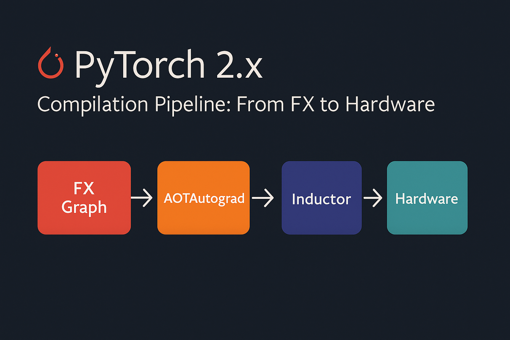
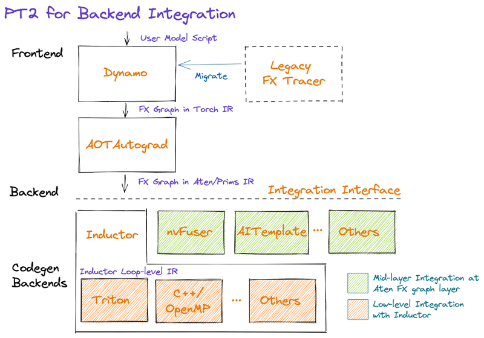

Overview
PyTorch 2.x introduced a revolutionary compilation stack that transforms high-level Python code into highly optimized machine code. This guide explores the complete pipeline: PyTorch → FX → Inductor → Backend (Triton/NvFuser/C++) → Hardware (GPU/CPU).
The Big Picture

The compilation pipeline transforms dynamic Python code into static, optimized kernels that run directly on hardware.
PyTorch FX: Graph Capture
What is FX?
FX (Functional eXtensions) is PyTorch’s graph representation system that captures the computational graph of PyTorch programs. Unlike traditional static graphs, FX maintains Python semantics while enabling powerful transformations.
Basic FX Usage
import torch
import torch.fx as fx
class SimpleModel(torch.nn.Module):
def __init__(self):
super().__init__()
self.linear = torch.nn.Linear(10, 5)
def forward(self, x):
x = self.linear(x)
x = torch.relu(x)
return x * 2
# Create and trace the model
model = SimpleModel()
traced_model = fx.symbolic_trace(model)
print("FX Graph:")
print(traced_model.graph)FX Graph Representation
# The FX graph shows the computation flow
def forward(self, x):
linear_weight = self.linear.weight
linear_bias = self.linear.bias
linear = torch._C._nn.linear(x, linear_weight, linear_bias)
relu = torch.relu(linear)
mul = relu * 2
return mulManual FX Transformations
import torch.fx as fx
def replace_relu_with_gelu(model: fx.GraphModule) -> fx.GraphModule:
"""Replace all ReLU operations with GELU"""
for node in model.graph.nodes:
if node.op == 'call_function' and node.target == torch.relu:
node.target = torch.nn.functional.gelu
model.recompile()
return model
# Apply transformation
transformed_model = replace_relu_with_gelu(traced_model)Key Features of FX
Dynamic Graph Capture: FX traces through actual Python execution, capturing control flow and dynamic shapes while building a graph representation. This approach bridges the gap between eager execution and static optimization.
Operator-Level Granularity: The FX graph represents computations at the PyTorch operator level, providing a clean abstraction that’s both human-readable and machine-optimizable.
Transformation Framework: FX provides a robust system for graph transformations, enabling optimizations like operator fusion, dead code elimination, and layout transformations.
TorchInductor: The Compiler
Understanding Inductor
TorchInductor is PyTorch’s deep learning compiler that takes FX graphs and applies sophisticated optimizations. It serves as the brain of the compilation pipeline, making intelligent decisions about how to optimize and execute the computation.
Core Optimization Strategies
Operator Fusion: TorchInductor identifies opportunities to fuse multiple operators into single kernels, reducing memory bandwidth requirements and improving cache locality. For example, a sequence like conv → batch_norm → relu becomes a single fused operation.
Memory Layout Optimization: The compiler analyzes data access patterns and optimizes tensor layouts to maximize memory bandwidth utilization. This includes choosing between row-major and column-major layouts, as well as more complex blocked layouts for specific hardware.
Kernel Selection and Scheduling: TorchInductor makes intelligent decisions about which backend to use for each operation and how to schedule operations for optimal performance across the entire graph.
Basic Compilation with torch.compile()
import torch
# Simple example
def simple_function(x, y):
return x.matmul(y) + x.sum(dim=1, keepdim=True)
# Compile the function
compiled_fn = torch.compile(simple_function)
# Usage
x = torch.randn(1000, 1000, device='cuda')
y = torch.randn(1000, 1000, device='cuda')
# First call triggers compilation
result = compiled_fn(x, y)Compilation Modes
# Different compilation modes
model = torch.nn.Linear(100, 10).cuda()
# Default mode (balanced speed/compilation time)
compiled_model_default = torch.compile(model)
# Reduce overhead mode (faster compilation)
compiled_model_reduce = torch.compile(model, mode="reduce-overhead")
# Maximum optimization mode (slower compilation, faster execution)
compiled_model_max = torch.compile(model, mode="max-autotune")
# Testing performance
x = torch.randn(1000, 100, device='cuda')
# Warmup and benchmark
for _ in range(10):
_ = compiled_model_max(x)
torch.cuda.synchronize()Inductor Configuration
import torch._inductor.config as config
# Configure Inductor behavior
config.debug = True # Enable debug output
config.triton.convolution = True # Use Triton for convolutions
config.cpp_wrapper = True # Generate C++ wrapper
config.freezing = True # Enable weight freezing optimization
# Custom optimization settings
config.max_autotune = True
config.epilogue_fusion = True
config.pattern_matcher = TrueBackend Targets
Triton Backend (GPU)
Triton is a Python-like language for writing highly efficient GPU kernels. TorchInductor can generate Triton code that compiles to optimized CUDA kernels.
Advantages of Triton:
- Higher-level abstraction than raw CUDA while maintaining performance
- Automatic memory coalescing and shared memory optimization
- Built-in support for blocked algorithms and tile-based computation
- Seamless integration with PyTorch’s autograd system
Typical Triton workflow:
- TorchInductor generates Triton kernel code based on the fused operations
- Triton compiler optimizes the kernel for the target GPU architecture
- Generated CUDA code is cached for future use
# Example of Triton-compiled operation
import torch
import triton
import triton.language as tl
@triton.jit
def add_kernel(x_ptr, y_ptr, output_ptr, n_elements, BLOCK_SIZE: tl.constexpr):
pid = tl.program_id(axis=0)
block_start = pid * BLOCK_SIZE
offsets = block_start + tl.arange(0, BLOCK_SIZE)
mask = offsets < n_elements
x = tl.load(x_ptr + offsets, mask=mask)
y = tl.load(y_ptr + offsets, mask=mask)
output = x + y
tl.store(output_ptr + offsets, output, mask=mask)
def triton_add(x: torch.Tensor, y: torch.Tensor):
output = torch.empty_like(x)
n_elements = output.numel()
# Launch kernel
grid = lambda meta: (triton.cdiv(n_elements, meta['BLOCK_SIZE']),)
add_kernel[grid](x, y, output, n_elements, BLOCK_SIZE=1024)
return output
# This is what Inductor generates internally for GPU operationsNvFuser: NVIDIA’s Fusion Runtime
For NVIDIA GPUs, PyTorch can leverage NvFuser, a specialized fusion compiler that excels at optimizing element-wise operations and reductions.
NvFuser Strengths:
- Deep integration with CUDA runtime and libraries
- Sophisticated analysis for memory access patterns
- Optimized handling of broadcasting and reduction operations
- Advanced techniques like loop unrolling and vectorization
C++ Backend (CPU)
For CPU execution, TorchInductor generates optimized C++ code that leverages vectorization and multi-threading.
CPU Optimization Features:
- SIMD vectorization using AVX, AVX2, and AVX-512 instructions
- OpenMP parallelization for multi-core utilization
- Cache-aware algorithms and memory prefetching
- Integration with optimized BLAS libraries like MKL and OpenBLAS
# Example of CPU compilation
@torch.compile
def cpu_intensive_function(x):
# Complex operations that benefit from C++ optimization
x = torch.sin(x)
x = torch.cos(x)
x = torch.exp(x)
return x.sum()
# CPU tensor
x_cpu = torch.randn(10000, 10000)
result = cpu_intensive_function(x_cpu)Backend Selection
# Specify backend explicitly
import torch._inductor
# For GPU (Triton)
compiled_gpu = torch.compile(model, backend="inductor")
# For CPU (C++)
compiled_cpu = torch.compile(model, backend="inductor")
# Custom backend
def custom_backend(gm, example_inputs):
"""Custom compilation backend"""
print(f"Compiling graph with {len(gm.graph.nodes)} nodes")
return gm
compiled_custom = torch.compile(model, backend=custom_backend)Hardware Execution
GPU Execution Pipeline
On GPU systems, the compiled kernels execute within CUDA streams, enabling overlap between computation and memory transfers. The runtime system manages:
- Memory Management: Efficient allocation and deallocation of GPU memory
- Stream Scheduling: Coordinating multiple CUDA streams for maximum throughput
- Synchronization: Managing dependencies between GPU operations
- Dynamic Shapes: Handling varying input sizes without recompilation
CPU Execution Optimization
CPU execution focuses on maximizing utilization of available cores and cache hierarchy:
- Thread Pool Management: Efficient distribution of work across CPU cores
- NUMA Awareness: Optimizing memory access patterns for multi-socket systems
- Cache Optimization: Minimizing cache misses through intelligent data layout
- Vectorization: Leveraging SIMD instructions for parallel data processing
Performance Impact and Benefits
Quantitative Improvements
The PyTorch 2.x compilation pipeline typically delivers:
- 2-10x speedup for training workloads
- 3-20x speedup for inference scenarios
- Significant memory efficiency improvements through fusion
- Better hardware utilization across different architectures
Qualitative Advantages
Ease of Use: Developers can achieve these performance benefits with minimal code changes, often just adding torch.compile() decorators.
Debugging Support: The compilation pipeline maintains debugging capabilities, allowing developers to inspect intermediate representations and profile performance bottlenecks.
Backward Compatibility: Existing PyTorch code continues to work unchanged, with compilation providing transparent acceleration.
Complete Example Walkthrough
ResNet Block Compilation
import torch
import torch.nn as nn
import time
class ResNetBlock(nn.Module):
def __init__(self, in_channels, out_channels, stride=1):
super().__init__()
self.conv1 = nn.Conv2d(in_channels, out_channels, 3, stride, 1, bias=False)
self.bn1 = nn.BatchNorm2d(out_channels)
self.conv2 = nn.Conv2d(out_channels, out_channels, 3, 1, 1, bias=False)
self.bn2 = nn.BatchNorm2d(out_channels)
self.shortcut = nn.Sequential()
if stride != 1 or in_channels != out_channels:
self.shortcut = nn.Sequential(
nn.Conv2d(in_channels, out_channels, 1, stride, bias=False),
nn.BatchNorm2d(out_channels)
)
def forward(self, x):
out = torch.relu(self.bn1(self.conv1(x)))
out = self.bn2(self.conv2(out))
out += self.shortcut(x)
out = torch.relu(out)
return out
# Create model
model = ResNetBlock(64, 64).cuda()
model.eval()
# Compile with different modes
model_compiled = torch.compile(model, mode="max-autotune")
# Benchmark
def benchmark_model(model, input_tensor, num_runs=100):
# Warmup
for _ in range(10):
_ = model(input_tensor)
torch.cuda.synchronize()
start_time = time.time()
for _ in range(num_runs):
_ = model(input_tensor)
torch.cuda.synchronize()
end_time = time.time()
return (end_time - start_time) / num_runs
# Test input
x = torch.randn(32, 64, 56, 56, device='cuda')
# Benchmark both versions
eager_time = benchmark_model(model, x)
compiled_time = benchmark_model(model_compiled, x)
print(f"Eager mode: {eager_time*1000:.2f}ms")
print(f"Compiled mode: {compiled_time*1000:.2f}ms")
print(f"Speedup: {eager_time/compiled_time:.2f}x")Attention Mechanism Optimization
import torch
import torch.nn.functional as F
import math
class MultiHeadAttention(nn.Module):
def __init__(self, d_model, num_heads):
super().__init__()
self.d_model = d_model
self.num_heads = num_heads
self.d_k = d_model // num_heads
self.W_q = nn.Linear(d_model, d_model)
self.W_k = nn.Linear(d_model, d_model)
self.W_v = nn.Linear(d_model, d_model)
self.W_o = nn.Linear(d_model, d_model)
def forward(self, query, key, value, mask=None):
batch_size = query.size(0)
# Linear projections
Q = self.W_q(query).view(batch_size, -1, self.num_heads, self.d_k).transpose(1, 2)
K = self.W_k(key).view(batch_size, -1, self.num_heads, self.d_k).transpose(1, 2)
V = self.W_v(value).view(batch_size, -1, self.num_heads, self.d_k).transpose(1, 2)
# Scaled dot-product attention
scores = torch.matmul(Q, K.transpose(-2, -1)) / math.sqrt(self.d_k)
if mask is not None:
scores = scores.masked_fill(mask == 0, -1e9)
attention_weights = F.softmax(scores, dim=-1)
attention_output = torch.matmul(attention_weights, V)
# Concatenate heads
attention_output = attention_output.transpose(1, 2).contiguous().view(
batch_size, -1, self.d_model
)
return self.W_o(attention_output)
# Compile attention
attention = MultiHeadAttention(512, 8).cuda()
compiled_attention = torch.compile(attention, mode="max-autotune")
# Test with transformer-like input
seq_len, batch_size, d_model = 1024, 32, 512
x = torch.randn(batch_size, seq_len, d_model, device='cuda')
# The compiled version will use optimized kernels for attention
output = compiled_attention(x, x, x)Advanced Optimization Techniques
Custom Fusion Patterns
import torch._inductor.lowering as lowering
from torch._inductor.pattern_matcher import PatternMatcher
# Define custom fusion patterns
def register_custom_patterns():
"""Register custom optimization patterns"""
@torch._inductor.pattern_matcher.register_pattern
def fuse_add_relu(match_output, x, y):
"""Fuse addition followed by ReLU"""
add_result = torch.add(x, y)
return torch.relu(add_result)
# This pattern will be automatically detected and fused
# Memory optimization
@torch.compile
def memory_efficient_function(x):
# Use in-place operations where possible
x = x.add_(1.0) # In-place addition
x = x.mul_(2.0) # In-place multiplication
return xDynamic Shape Handling
The compilation system handles dynamic input shapes through a combination of specialization and generalization strategies. When shapes change frequently, the compiler can generate kernels that handle ranges of shapes efficiently.
# Handling dynamic shapes
@torch.compile(dynamic=True)
def dynamic_function(x):
# This function can handle varying input shapes
return x.sum(dim=-1, keepdim=True)
# Test with different shapes
shapes = [(100, 50), (200, 30), (150, 80)]
for shape in shapes:
x = torch.randn(*shape, device='cuda')
result = dynamic_function(x)
print(f"Shape {shape} -> {result.shape}")Reduce Overhead Mode
import torch._dynamo as dynamo
# Configure for minimal overhead
dynamo.config.suppress_errors = True
dynamo.config.cache_size_limit = 1000
@torch.compile(mode="reduce-overhead")
def low_overhead_function(x):
# Optimized for minimal compilation overhead
return x.relu().sum()
# This mode is ideal for frequently called functionsDebugging and Profiling
Compilation Debugging
import torch._dynamo as dynamo
import torch._inductor.config as config
# Enable debug output
config.debug = True
config.trace.enabled = True
# Set environment variables (in shell)
# export TORCH_COMPILE_DEBUG=1
# export TORCHINDUCTOR_TRACE=1
@torch.compile
def debug_function(x):
return torch.sin(x).sum()
# This will show compilation steps
x = torch.randn(1000, device='cuda')
result = debug_function(x)Performance Profiling
import torch.profiler
def profile_compilation():
model = torch.nn.Linear(1000, 1000).cuda()
compiled_model = torch.compile(model)
x = torch.randn(1000, 1000, device='cuda')
with torch.profiler.profile(
activities=[
torch.profiler.ProfilerActivity.CPU,
torch.profiler.ProfilerActivity.CUDA,
],
record_shapes=True,
with_stack=True,
) as prof:
# Warmup
for _ in range(10):
_ = compiled_model(x)
# Profile
for _ in range(100):
_ = compiled_model(x)
print(prof.key_averages().table(sort_by="cuda_time_total", row_limit=10))
profile_compilation()Inspecting Generated Code
import torch._inductor.codecache as codecache
# Enable code generation inspection
@torch.compile(mode="max-autotune")
def inspectable_function(x, y):
return torch.matmul(x, y) + torch.sin(x)
# After compilation, you can inspect generated code
x = torch.randn(1000, 1000, device='cuda')
y = torch.randn(1000, 1000, device='cuda')
result = inspectable_function(x, y)
# Generated Triton/C++ code will be available in the cache
print("Generated code location:", codecache.PyCodeCache.cache_dir)Best Practices
1. Model Preparation
# Prepare your model for compilation
def prepare_model_for_compilation(model):
"""Best practices for model preparation"""
# Set to eval mode for inference
model.eval()
# Move to appropriate device
model = model.cuda() # or .cpu()
# Freeze batch norm layers
for module in model.modules():
if isinstance(module, (nn.BatchNorm1d, nn.BatchNorm2d, nn.BatchNorm3d)):
module.eval()
return model
# Compile with appropriate settings
model = prepare_model_for_compilation(model)
compiled_model = torch.compile(model, mode="max-autotune")2. Effective Warmup
def warmup_compiled_model(compiled_model, example_inputs, num_warmup=10):
"""Proper warmup for compiled models"""
# Warmup runs
for _ in range(num_warmup):
with torch.no_grad():
_ = compiled_model(*example_inputs)
# Ensure GPU synchronization
if torch.cuda.is_available():
torch.cuda.synchronize()3. Memory Management
@torch.compile
def memory_efficient_training_step(model, optimizer, x, y, loss_fn):
"""Memory-efficient training step"""
# Forward pass
with torch.cuda.amp.autocast():
output = model(x)
loss = loss_fn(output, y)
# Backward pass
optimizer.zero_grad(set_to_none=True) # More memory efficient
loss.backward()
optimizer.step()
return loss.item()4. Performance Tuning Tips
Warm-up Compilation: The first execution includes compilation overhead. For production deployments, run a few warm-up iterations to ensure kernels are compiled and cached.
Batch Size Considerations: Larger batch sizes generally benefit more from compilation due to better amortization of kernel launch overhead and improved arithmetic intensity.
Memory Layout Awareness: Consider tensor layouts and memory access patterns when designing models, as the compiler can optimize more effectively with regular access patterns.
Conclusion
The PyTorch 2.x compilation pipeline represents a significant advancement in deep learning optimization. By understanding the flow from FX graph capture through Inductor compilation to hardware-specific backends, you can:
- Achieve significant speedups (2-10x) with minimal code changes
- Optimize memory usage through fusion and kernel optimization
- Handle dynamic workloads efficiently
- Debug performance issues at each compilation stage
The journey from high-level Python code through FX graph representation, TorchInductor optimization, and backend-specific code generation demonstrates the sophisticated engineering required to make complex optimizations accessible to everyday users. As the ecosystem continues to evolve, we can expect even greater performance improvements and broader hardware support while maintaining PyTorch’s commitment to usability and research flexibility.
This compilation pipeline not only accelerates existing workloads but also enables new possibilities in model architecture design and deployment strategies, making it an essential tool for the modern deep learning practitioner.
The key to success is understanding when and how to apply compilation, proper model preparation, and effective debugging when issues arise. Start with simple torch.compile() calls and gradually explore advanced optimization techniques as needed.
Key Takeaways
- Use
torch.compile()for automatic optimization - Choose appropriate compilation modes based on your use case
- Leverage FX for custom graph transformations
- Monitor memory usage and compilation overhead
- Profile and debug systematically
This compilation stack makes PyTorch 2.x not just user-friendly but also performance-competitive with specialized frameworks, all while maintaining the flexibility and ease of use that PyTorch is known for.